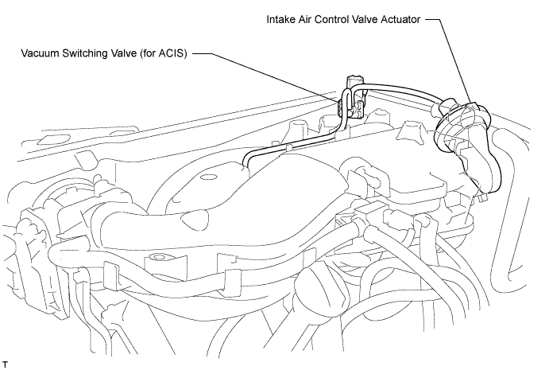
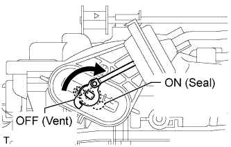
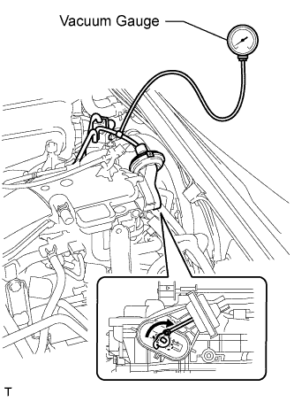
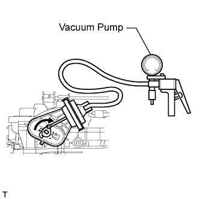
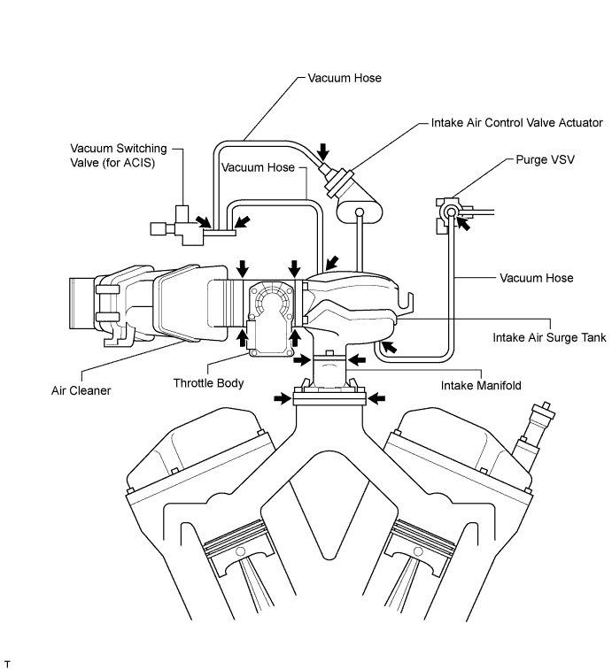

INTAKE SYSTEM > ON-VEHICLE INSPECTION |
| 1. CHECK INTAKE AIR CONTROL FUNCTION |

Remove the V-bank cover.
Start the engine.
 |
Check that the VSV (for ACIS) is ON (seal) under either of the following conditions below.
Check that the VSV (for ACIS) is OFF (vent) under either of the following conditions below.
Connect the intelligent tester to the DLC3.
Perform the Active Test, and then check that the actuator rod operates.
If the result is not as specified, inspect the intake air control valve, vacuum tank and VSV (for ACIS) for normal operation. Replace malfunctioning parts as necessary.
Install the V-bank cover.
| 2. CHECK INTAKE AIR CONTROL VALVE OPERATION |
Remove the V-bank cover.
 |
Using a 3-way connector, connect a vacuum gauge to the actuator hose.
Start the engine.
While the engine is idling, check that the vacuum gauge needle momentarily fluctuates up to approximately 40 kPa (299 mmHg, 11.8 in.Hg) (the actuator rod is pulled out).
Fully depress the accelerator pedal, and check that the vacuum gauge needle points to 0 kPa (0 mmHg, 0 in.Hg) (the actuator rod is returned).
Remove the vacuum gauge, and connect the vacuum hose to the actuator.
Install the V-bank cover.
| 3. INSPECT INTAKE AIR CONTROL VALVE |
 |
Inspect the diaphragm.
Using a vacuum pump, apply a vacuum of 27 kPa (200 mmHg, 7.85 in.Hg). Check that the lever moves.
If the result is not as specified, replace the intake air surge tank.
| 4. CHECK AIR INDUCTION SYSTEM |

Check that the hoses are installed correctly.
Check for cracks, etc. in the hoses.